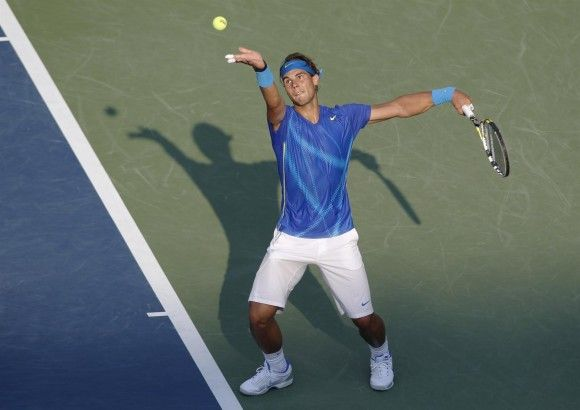

gana
un puntola pelota sale fuera
de los límites de la pistala pelota por encima de la red
dos botes
en el mismo campoel sacador comete dos errores
o faltas consecutivas de saque 15
30
40
¡JUEGO!
TIE-BREAK.
Ejemplo de ojo de halcón en este enlace